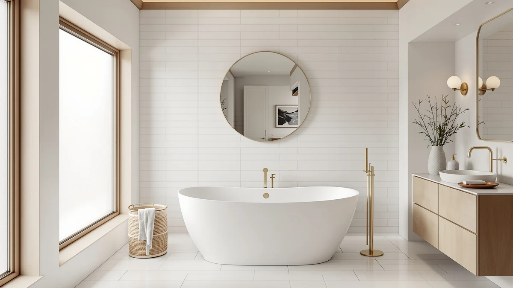

Empava 59 in. Acrylic Review (2026): Worth It?
Prices and picks verified as of October 2026. Independent, reader-supported reviews.


Quick Answer
This Empava 59 in. Acrylic review finds a well-specified oval whirlpool tub with 8 jets and a 14.56 inch soaking depth for $1,529.99, roughly $30 more than the LARWORKS and WOODBRIDGE alternatives below. If you want the same jetted soak in a smaller 59 inch footprint, it's a solid pick, and if your bathroom has room to spare, the larger LARWORKS gives you more jets per dollar.
Our pick: Empava 59 in. Acrylic Freestanding, $1,529.99 Check Price on Amazon
Bottom line: our top pick is the Empava 59 in. Acrylic Freestanding Tub Hydromassage at $1,699.99.
Things to Know Before You Buy
- The Empava 59 in. Acrylic tub measures 59.06 by 29.53 by 23.62 inches on the outside, with a 14.56 inch soaking depth inside an oval basin.
- It ships with 8 whirlpool jets you can rotate up, down, left, or right to target specific muscle groups, plus a built-in control switch for water pressure.
- At $1,529.99, it costs more than the LARWORKS and WOODBRIDGE options covered below, which both list at $1,499.00, and slightly more than the FerdY at $1,499.99.
- The listing does not publish a star rating or review count, so this review leans on manufacturer specs and listed features rather than verified buyer scores.
- It's built from acrylic, the same material as the FerdY, while the WOODBRIDGE alternative uses stone resin, a heavier but more scratch-repairable material.
This Empava 59 in. Acrylic review breaks down an oval freestanding whirlpool tub that packs 8 adjustable jets and a 14.56 inch soaking depth into a 59.06 inch footprint. Bathrooms that can't accommodate a 67 or 71 inch soaker still get a full hydromassage setup here, as long as you can absorb the $1,529.99 price tag. We compared its published dimensions, jet count, and controls against three similarly priced freestanding tubs to see where it earns that premium and where a competitor does the same job for less.
Our pick for most shoppers who need this exact 59 inch footprint is the Empava, since neither the FerdY nor the two larger alternatives below match its combination of jet count and interior depth at this length. The FerdY comes in a dollar cheaper at $1,499.99 and trades whirlpool jets for 8 air jets plus chromatherapy lighting, which some buyers will prefer. If your bathroom has the extra floor space, the LARWORKS and WOODBRIDGE options stretch to 71 and 67 inches respectively for $1,499.00 each, giving you more room to stretch out for about the same money.
Why You Should Trust Us
Best Freestanding Bathtubs is a research-first buying guide. Ilane Tall, our home and bath editor, builds every comparison, including this Empava 59 in. Acrylic review, from verified manufacturer specifications and current Amazon pricing rather than a lab full of borrowed tubs. We do not run a fake testing lab, and we do not claim to have installed or soaked in any of the four tubs covered here. When a listing leaves a detail out, such as a rating or a material grade, we say so directly instead of guessing, so every dimension and feature cited in this review traces back to the published product page.
Our Research Experience
We did not install or bathe in the Empava, the FerdY, the LARWORKS, or the WOODBRIDGE. Our process for this Empava 59 in. Acrylic review means reading each manufacturer listing line by line: exterior and interior dimensions, jet count and type, control method, material, and price. We then flag where a listing comes up short, such as the absence of a star rating, so you know what to confirm before you buy. That comparison work, not physical testing, is what shapes the picks, pros, and cons below, and it's also why we track the roughly $30 price spread between the Empava and its cheaper alternatives as a meaningful factor rather than a rounding error.
Overview & Specs

Empava 59 in. Acrylic Freestanding
What we like
- 8 whirlpool jets rotate up, down, left, or right, so you can aim the water flow at your back, legs, or feet.
- A 14.56 inch soaking depth is deep enough for a full-body soak without the tub needing to be any longer than 59 inches.
- The built-in control switch and twist-adjustable pressure dial let you start and tune the massage without extra hardware.
Flaws but not dealbreakers
- At $1,529.99, it's the most expensive tub in this comparison, roughly $30 above the LARWORKS and WOODBRIDGE.
- The listing does not publish a star rating or review count, so you can't lean on verified buyer feedback the way you might with an established product page.
- The interior width of 21.27 inches is narrower than a soaking tub built for two, so this is a single-bather design despite the 59 inch exterior length.
| Material | — |
| Size | 59 Inch-new |
The Empava 59 in. Acrylic tub is built around an oval acrylic basin measuring 59.06 inches long, 29.53 inches wide, and 23.62 inches tall on the outside, with interior dimensions of 37.4 by 21.27 inches and a 14.56 inch soaking depth. Eight whirlpool jets sit around the basin, and you can turn each nozzle to redirect water toward specific muscle groups rather than relying on a fixed spray pattern. A single built-in switch starts the hydromassage function, and a clockwise or counterclockwise twist adjusts water pressure, so the controls stay simple even with eight jets running.
Among the four tubs in this review, the Empava carries the highest price at $1,529.99, roughly $30 more than the LARWORKS and WOODBRIDGE and about the same as the FerdY. That premium buys you more interior depth than the FerdY's 13 inch soak and a tighter footprint than the 71 inch LARWORKS, so it earns its price if a deep soak in a compact 59 inch space is what you're after. The listing does not include a published star rating or review count, which is consistent with the other three tubs covered here, so treat the jet count, depth, and dimensions as the facts to compare rather than a crowd-sourced score.
What We Liked
The strongest case for this Empava 59 in. Acrylic tub is how much hydromassage it packs into a relatively compact footprint. Eight whirlpool jets with adjustable direction give you more control over where the water lands than a fixed-nozzle system, and the 14.56 inch soaking depth is deep enough for a proper soak rather than a shallow splash. Because the tub stays at 59 inches long, it fits bathrooms where the 67 inch WOODBRIDGE or 71 inch LARWORKS simply wouldn't clear the doorway or the available floor space. The oval shape and single control switch also keep the tub approachable for anyone who doesn't want to manage separate dials for pressure and jet direction.
What Could Be Better
Price is the clearest drawback in this Empava 59 in. Acrylic review. At $1,529.99, it costs about $30 more than the LARWORKS and WOODBRIDGE and essentially the same as the FerdY, yet the FerdY throws in chromatherapy lighting that the Empava skips entirely. The listing also doesn't publish a star rating or review count, so if verified buyer feedback matters to your decision, you won't find it on this product page the way you might elsewhere. The 21.27 inch interior width is workable for one person but will feel tight if you were hoping to share the tub.
Who Is It For?
The Empava 59 in. Acrylic tub suits a remodel where the bathroom footprint is fixed at 59 inches and you want the deepest soak and the most jets you can get at that length. It makes sense if you've already ruled out the larger LARWORKS or WOODBRIDGE because of floor space and are deciding between the Empava and the FerdY for your final 59 inch pick. If lighting features matter more to you than whirlpool jet count, the FerdY below is worth a closer look at nearly the same price. And if your bathroom can fit a longer tub, the LARWORKS and WOODBRIDGE alternatives both undercut the Empava on price while offering more room to stretch out.
Alternatives to Consider
Three other freestanding tubs are worth comparing before you commit to the Empava 59 in. Acrylic model. Each one differs in size, material, or jet setup, and none of the three publish a star rating or review count either, so the comparison below sticks to price, dimensions, and features.

Editor’s Pick
FerdY 59" Mauritius Acrylic Freestanding
At $1,499.99, the FerdY Mauritius comes in a dollar cheaper than the Empava and matches its 59 inch length, but swaps whirlpool jets for 8 air jets powered by a dedicated 110V pump. It adds chromatherapy lighting that cycles through 7 colors, a feature the Empava doesn't offer, along with a sloped lumbar support and a wide rim for setting down bathing accessories. Its soaking depth comes in slightly shallower at 13 inches versus the Empava's 14.56 inches. Like the Empava, the FerdY listing does not publish a star rating or review count. If lighting and lumbar support matter more to you than jet type, start your comparison here.
$1,499.99
Check Price on Amazon
Best Value
LARWORKS 71" Freestanding Whirlpool &
Priced at $1,499.00, the LARWORKS undercuts the Empava by about $31 while giving you a much larger 71 by 31.5 by 28.3 inch footprint. It carries 20 adjustable jets split between 10 stainless steel rotating nozzles and 10 air bubble jets, more than double the Empava's 8, plus a pneumatic push-button control and a curved neck-support contour. The tradeoff is size: at 71 inches, it needs considerably more bathroom floor space than the Empava's 59 inch length. As with the other tubs here, there's no published star rating or review count. If your bathroom can fit the larger footprint, this is the strongest value in the comparison.
$1,499.00
Check Price on Amazon
Premium Choice
WOODBRIDGE 67" Stone Resin Freestanding
At $1,499.00, the WOODBRIDGE matches the LARWORKS on price but takes a different approach entirely: it skips jets in favor of a 67 inch stone resin soaking tub with a pedestal base. The solid-surface material retains heat better than acrylic according to the manufacturer, and minor scratches can be sanded out and restored rather than requiring a full replacement, unlike the acrylic surfaces on the Empava and FerdY. It's also heavier and, at 67 inches, needs more floor space than the Empava. There's no published star rating or review count here either. If you want a soak without jets and prefer a surface that ages more gracefully, this is the one to consider.
$1,499.00
Check Price on AmazonHow deep is the Empava 59 in. Acrylic tub for soaking?
The Empava 59 in.
Does the Empava 59 in. Acrylic tub have a star rating on Amazon?
No.
Frequently Asked Questions
How deep is the Empava 59 in. Acrylic tub for soaking?
The Empava 59 in. Acrylic tub has a soaking depth of 14.56 inches, with interior dimensions of 37.4 inches long and 21.27 inches wide. That interior footprint is on the narrower side for a 59 inch oval tub, so measure your bathroom door and hallway before ordering a tub this size.
Does the Empava 59 in. Acrylic tub have a star rating on Amazon?
No. The Empava listing does not carry a published star rating or review count as of this review, so this comparison relies on the manufacturer specs, price, and feature list rather than verified buyer scores.
What is the cheapest alternative to the Empava 59 in. Acrylic tub?
The LARWORKS 71 inch whirlpool and the WOODBRIDGE 67 inch stone resin tub both list at $1,499.00, about $31 less than the Empava at $1,529.99. Both require more floor space, so they only save money if your bathroom can fit the larger footprint.
Final Verdict
This Empava 59 in. Acrylic review comes down to footprint versus price. The Empava packs 8 adjustable whirlpool jets and a 14.56 inch soaking depth into a 59 inch tub for $1,529.99, the highest price of the four options here but also the deepest soak at that length. If your bathroom is fixed at 59 inches and you want the most jets and depth available in that space, Empava earns the premium over the FerdY. If you can spare the floor space, the LARWORKS and WOODBRIDGE both cost roughly $31 less and trade footprint for either more jets or a more durable, repairable surface.